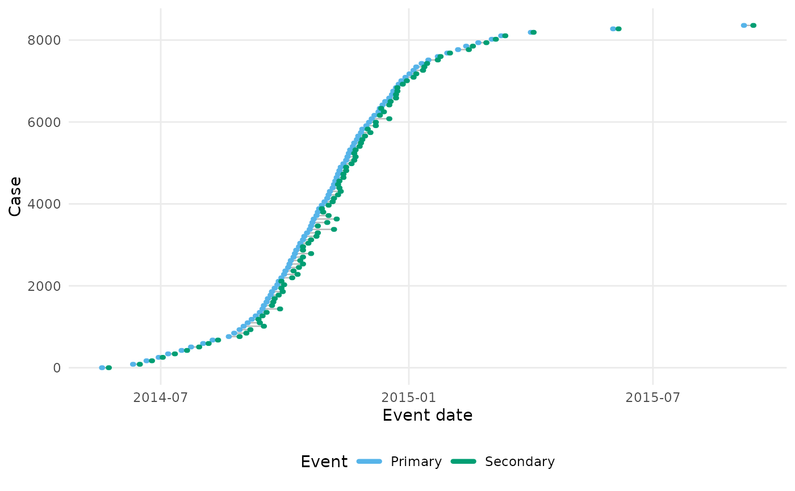
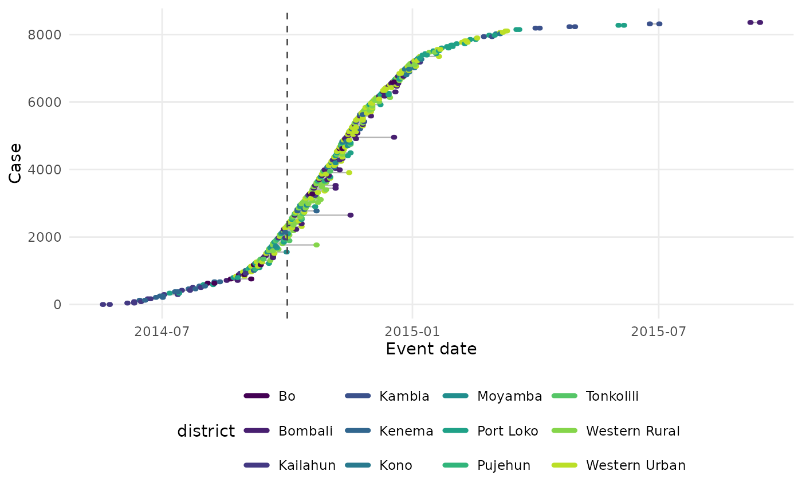

Draws one row per case, ordered by primary event time, with the primary and secondary event windows as horizontal segments joined by a line for the delay between them. A dashed vertical line marks the observation time when one is given. This is the plot the vignettes use to show how censoring and truncation obscure the delays.
Arguments
- data
An
epidist_linelist_dataobject.- obs_time
The observation time to mark with a dashed vertical line, as a date or a number on the scale of the event times. If
NULL, the default, no line is drawn.- by
A string naming a column of
datato colour the cases by. IfNULL, the default, the primary and secondary event windows are coloured differently instead.- n
The maximum number of cases to draw. Defaults to 200. Use
Infto draw every case.
Details
Dates are used when data has the date columns that
as_epidist_linelist_data.data.frame() keeps, pdate_lwr and so on, and
the numeric time columns otherwise. obs_time must be on the same scale.
Cases are ordered by the lower bound of their primary event window and
numbered in that order, so the vertical axis shows the growth of the
outbreak. When there are more than n cases, n evenly spaced cases in
that order are drawn. This keeps the shape of the outbreak without
over-plotting.
The plot is drawn with ggplot2::theme_minimal() and the colour blind
friendly palette the package documentation uses. Add a theme or a scale of
your own to the returned plot to override either. The column named by by
is kept in the plot data, so the plot can be faceted by it.
See also
Other plot:
plot.epidist_delay_draws()
Examples
linelist <- sierra_leone_ebola_data |>
as_epidist_linelist_data(
pdate_lwr = "date_of_symptom_onset",
sdate_lwr = "date_of_sample_tested"
)
#> ℹ No primary event upper bound provided, using the primary event lower bound + 1 day as the assumed upper bound.
#> ℹ No secondary event upper bound provided, using the secondary event lower bound + 1 day as the assumed upper bound.
#> ℹ No observation time column provided, using 2015-09-14 as the observation date (the maximum of the secondary event upper bound).
plot_events(linelist, n = 100)

plot_events(linelist, obs_time = as.Date("2014-10-01"), by = "district")
